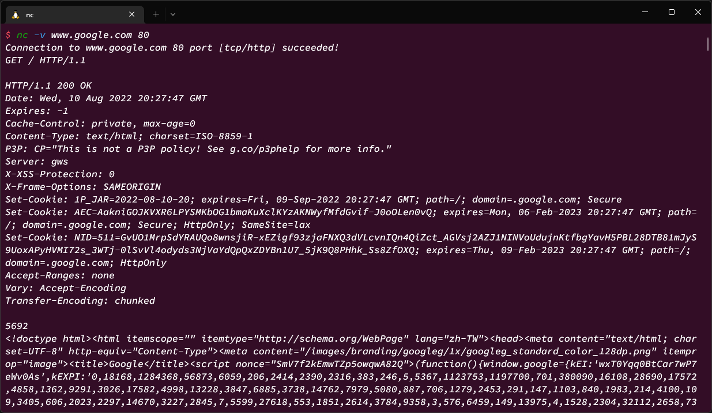
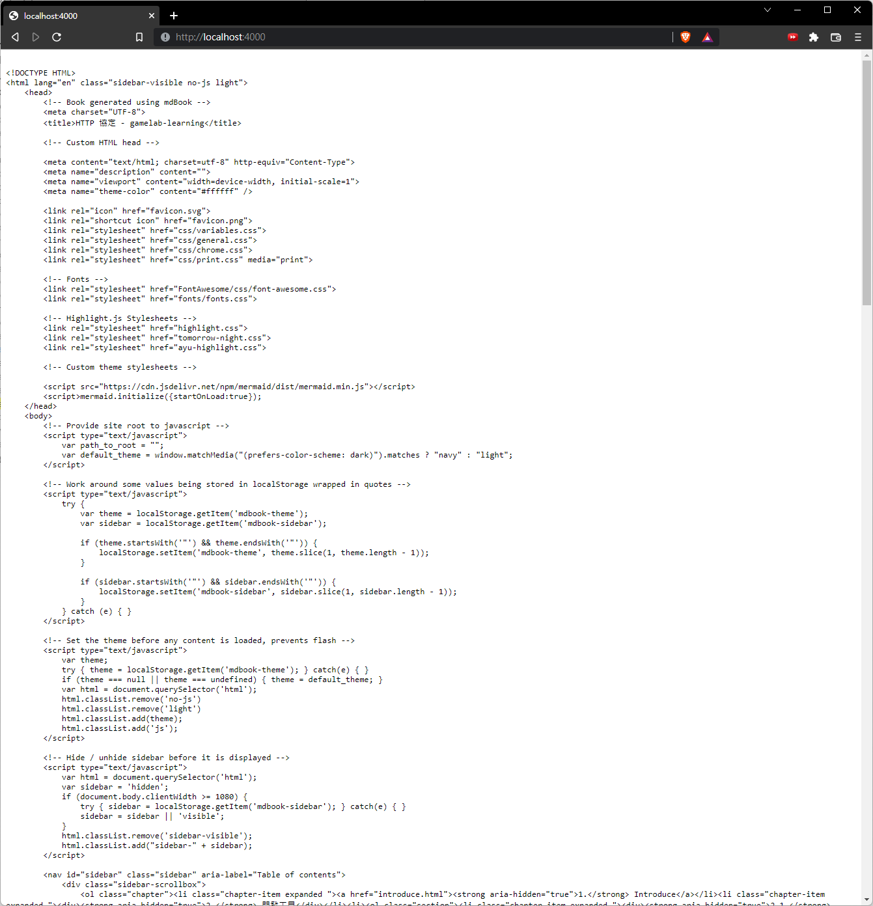
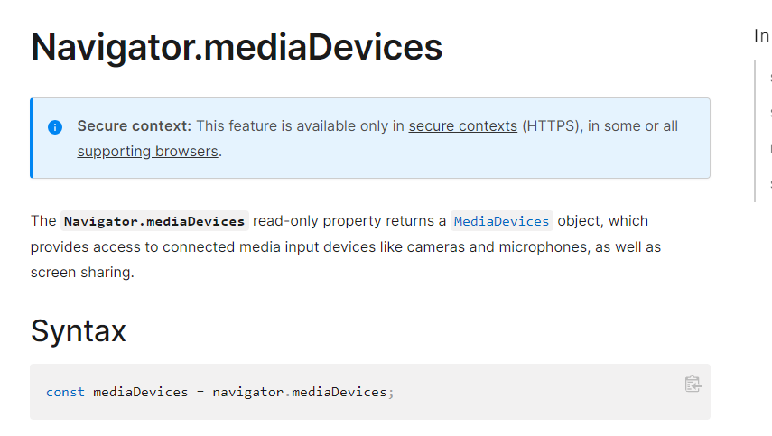

HTTP

HTTP 全名為 Hyper Text Transfer Protocol 超文字傳輸協定
紀錄於 RFC 2616
以及衍生的 HTTPS、HTTP/2 等協定
相信各位在計算機網路概論都有學習過該協定的內容，因此這裡只會進行一些補充
以及一些伺服器相關的實作
請注意，如 HTTP Pipeline 之類的細節不在本章範疇，預設你已經在計算機網路概論學習過了
User-agent
泛指能夠發出請求的工具，通常由瀏覽器協助處理。而一些情況下，如開發人員的Debugger、爬蟲腳本等，也算是 User-agent
由瀏覽器發出的請求，通常會受到一些限制(不像自己撰寫的Request 那麼自由)，常見的工具有
- curl
- wget
- python、javascript、php 的腳本
那在 linux 系統上，還有如 nc 等工具，可以建立 Raw TCP 連線，輸入 HTTP 請求文：

HTTP 請求格式

請求會由以下幾個元素組合而成：
- HTTP 動詞
- 請求路徑
- HTTP 協議版本
- headers
- 請求內容
HTTP 的 Header 可以見 MDN: HTTP Headers
這裡只提幾個重要且常見的 Header:
- Authorization：添加認證資訊
- Content-type：告知接收方，請求內容的格式
- X-*：自定義的表頭
這裡特別要提及的是 Content-type，在REST 章節中，有強調資源的表達，就是透過該表頭
比方說 JSON 格式的資料，會透過 content-type: application/json
一般的表單提交，通常會會是 application/x-www-form-urlencoded 或是 multioart/form-data
在以前，比較少處理檔案的提交，因此使用 application/x-www-form-urlencoded 即可，他會把表單用類似 Query String 的方式封裝
如果有個表單要輸入：帳號、密碼、電子信箱，那封裝後的資料格式為
account=myacc&password=a12345678&mail=user@example.com
HTTP 回應格式

響應內容會由以下幾個元素組合而成：
- HTTP 協議版本號
- status code，告知對應請求的成功或失敗，以及原因
- status message，描述訊息，可以由伺服器端指定
- HTTP headers(與請求相似)
- 回應主體
Content-type 重要的原因為，他指明了資源是以何種模式傳送，即使今日我發明了某種特殊的格式 my-packed
只要伺服器端擷取 content-type 表頭，就可以知道應該以什麼樣的方式來存取資源
比方說實現一個伺服器，並把回傳表頭設定為 text/plain，而不是 text/hmtl
這將會使得瀏覽器不把回傳內容當成 HTML 處理，因此會顯示：

而非平常看到的網頁形式
要注意的是，在瀏覽器上看到的一切，都是瀏覽器處理的
比方說HTML文字，瀏覽器會繪製成精美的畫面；
使用 VSCode 打開，舊只是一連串的文字；
請注意某些行為，是由瀏覽器幫你完成的
HTTPS
在這裡，要特別提及的事情是 HTTPS 為什麼要特別提呢？
原因是因為，HTTPS的站點與HTTP的站點瀏覽器的行為會不一樣
這是因為，HTTPS的站點瀏覽器會啟用 Secure Contexts
而一般的HTTP的站點，會被限制某些 Web API，比方說 麥克風或是PWA的功能
以 Google Meeting 的功能來說，像是直播畫面、語音通話，在HTTP站點是不可能的
Web API 中，有某些特別的 APIs，包含：
- 需要用戶端設備的訪問權限
- 針對特殊數據的訪問，如用戶憑證
就不允許在 HTTP 站點中使用
在 MDN 的 API 說明中，也會特別註記 
更多資訊參考 Secure Contexts
而有時候，會感覺 HTTPS 的站點好像比較快
這也不是錯覺，因為 HTTPS 部分可能會啟用 HTTP/2 或是 SPDY 協議，因此不會限制併發數量
HTTP站點會限制同網域的最大併發數量，請見這裡
不過當使用 localhost 時，則不受到此限制，因為是透過 loopback 位址(127.0.0.0/8 or ::1/128)進行處理
章節回顧
本章節把 HTTP 比較容易遺漏的部分看過一次，並指出HTTPS站點的行為與HTTP站點是不同的
- HTTP 的用戶端組成
- Content-type 的重要性
- 瀏覽器的 Secure Contexts